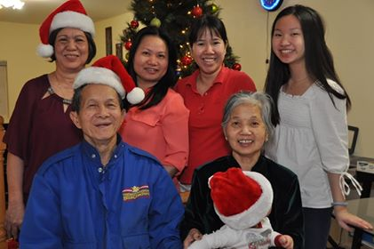
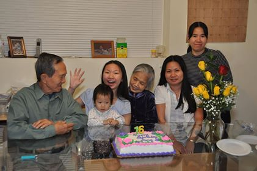
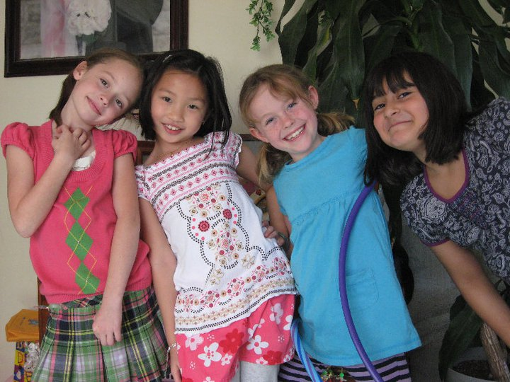
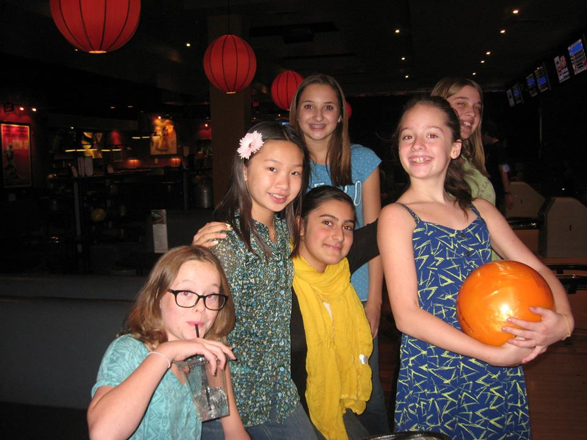
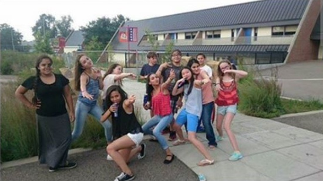
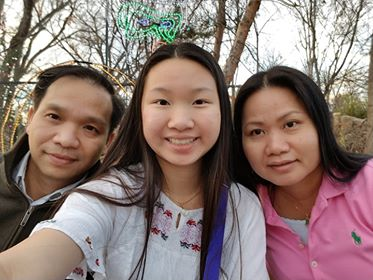
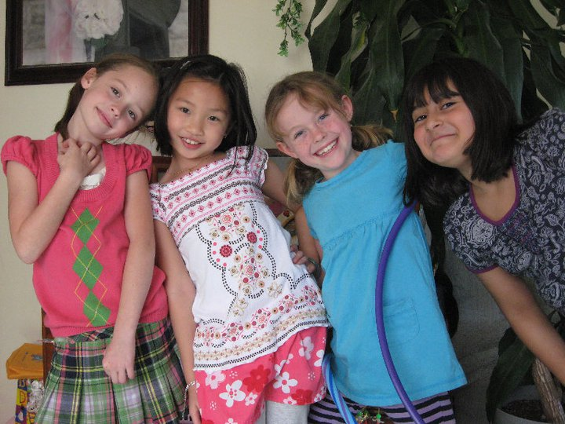
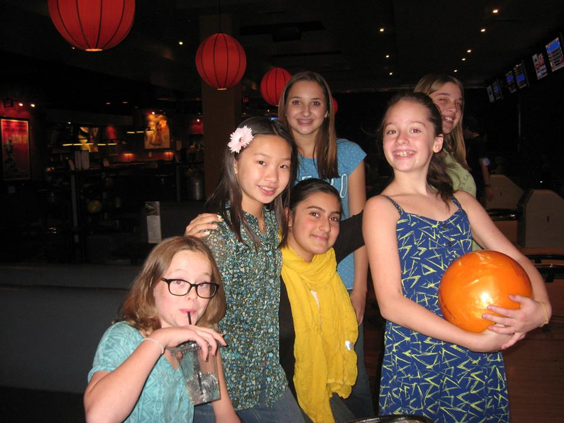
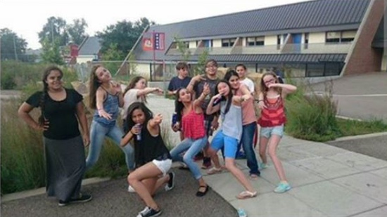
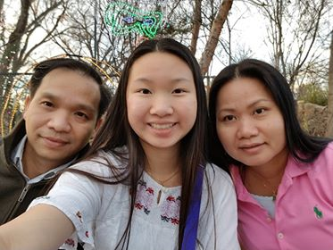

Family and Friends
Over my the course of my lifetime, I have been blessed with every opportunity to meet new people and continue to love those I've had the pleasure of knowing. Each and every person here has had some form of impact on my life, whether significant or not! Here are some photos of several of the many people I'm close to!.
  






